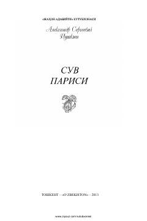

SPAleksandr Pushkinning qadimiy rus davri mavzusidagi tugallanmagan dramatik asari.
Ushbu asar buyuk rus shoiri Aleksandr Pushkinning qalamiga mansub bo'lib, qadimiy rus davri mavzularini o'z ichiga olgan tugallanmagan pyesadir. Kitobda knyazning axloqsizligi va xudbinligi fonida insoniy kechinmalar hamda dramatik voqealar badiiy tilda tasvirlangan.